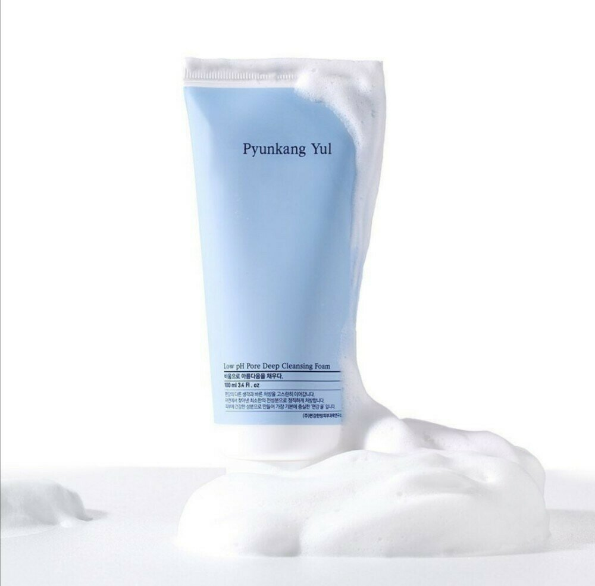
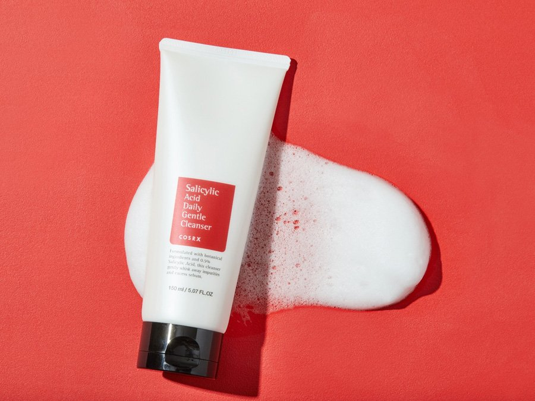
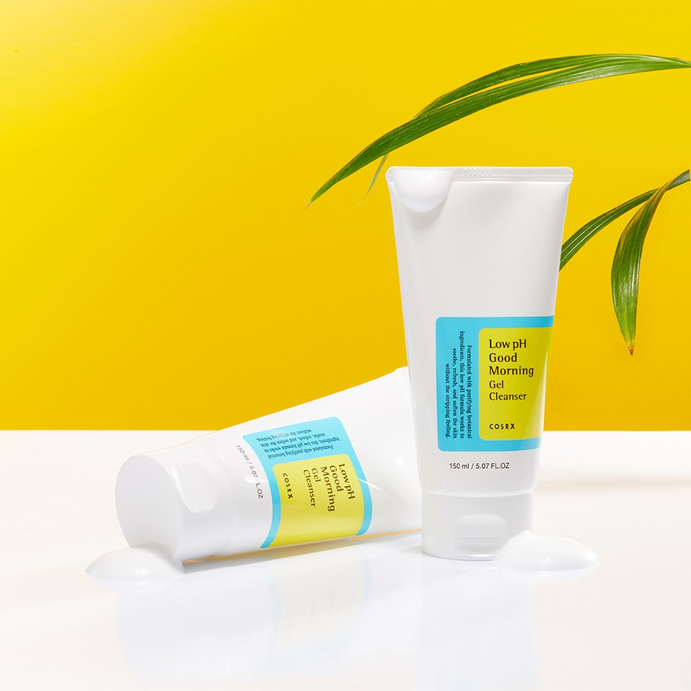
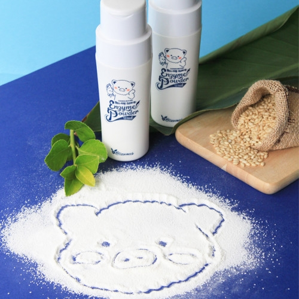
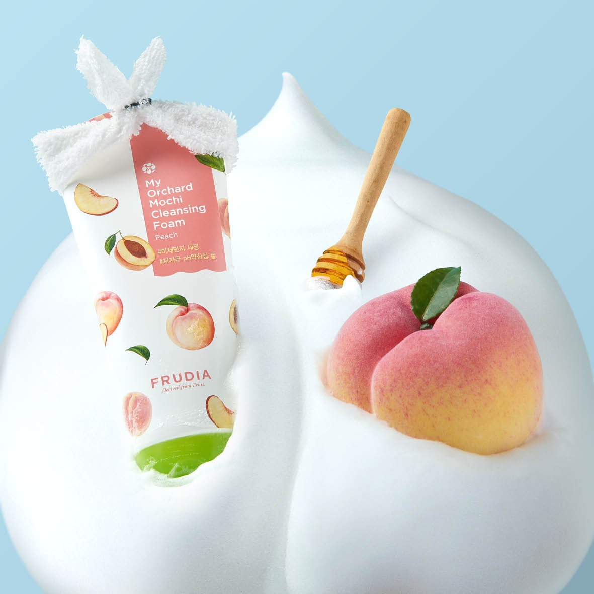

|
XOXO
Cosmetics
|
|---|
| Номер | Товар | Свойства продукта | Цена |
|---|---|---|---|
| 1 | 
|
Pyunkang Yul - Low pH Pore Deep Cleansing Foam - мягкая очищающая
пенка, адаптированная к потребностям сухой, комбинированной и жирной кожи.
Слабокислотные реакция восстанавливает естественный pH кожи,
ускоряя отшелушивание отмерших клеток кожи.
Продукт содержит множество растительных экстрактов, в том числе экстракт азиатской центеллы и экстракт листьев лещины, которые обладают антиоксидантной активностью. После использования пенки кожа очищается, сохраняя правильное увлажнение. Способ применения: возьмите небольшое количество и нанесите на сухую кожу лица, избегая области вокруг глаз. Намочите руки и сделайте легкий массаж. Смойте теплой водой. |
240грн. |
| 2 | 
|
Для тщательного ухода необходимо приобретать более щадящие средства.
Пенка с салициловой кислотой от корейского бренда Cosrx прекрасно
справляется с функцией очищения эпидермиса, попутно выравнивает его поверхность.
Благодаря высокому содержанию кислот и натуральных растительных компонентов удается максимально очистить кожу и справиться с такими проблемами, как акне, угри, сальные пробки, черные точки. Представленный продукт оказывает антибактериальное и противовоспалительное действие, снимая раздражения. Позвольте своей коже быть безупречной, подарите ей свежесть и красоту, ведь с Salicylic Acid Daily Gentle Cleanser от Cosrx это так просто и комфортно! |
255грн. |
| 3 | 
|
Известный корейский бренд Cosrx выпустил великолепную гель-пенку Low Ph Good Morning Gel Cleanser с ВНА-кислотами, косметический продукт поможет осуществить идеальный ежедневный уход за кожей лица и добиться идеального очищения. Средство отличается деликатностью и гипоаллергенностью, поэтому подойдет для особенно чувствительного эпидермиса. Высокая эффективность продукта в очищении и улучшении состояния кожи достигается за счет специально разработанного состава, высокого содержания ВНА-кислот и натуральных компонентов. Способ применения: небольшое количество средства, вспеньте с малым количеством воды. Нанесите, полученную пену на влажную кожу лица, массажными движениями. После умойтесь теплой водой. |
153грн. |
| 4 | 
|
Гипоаллергенная энзимная пудра для умывания известного
корейского бренда Elizavecca — нежный порошок, выполняющий сразу
две функции: тщательное очищение и деликатный пилинг.
Состав Elizavecca Milky Piggy Hell-Pore Clean Up Enzyme Powder Wash обогащен активными компонентами растительного происхождения (экстракты танжерина, апельсина, лимона, энзимы папайи). Способ применения: высыпать небольшое количество пудры на ладонь, вспенить и нанести массажными движениями на лицо. Смыть теплой водой. | 352грн. |
| 5 | 
|
Пенка с персиком деликатно очищает кожный покров от различных
загрязнений, остатков декоративной косметики, оставляя ощущения свежести,
чистоты и комфорта.
Гиалуроновая кислота в составе пенки эффективно увлажняет эпидермис, растительные экстракты цитрусовых фруктов, персика и центеллы насыщают питательными веществами и смягчают. Бьюти-продукт с восхитительным фруктовым ароматом поможет в ежедневном очищении кожи и подарит естественное сияние! Способ применения: Нанесите необходимое количество средства на кожу лица и помассируйте ее. Тщательно смойте теплой водой. |
151рн. |
|
Вы можете связаться с нами: e-mail:diana2000life$.gmail Instagram:XOXO COSMETICS
|
|---|